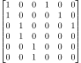
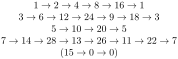

Luke Wiljanen
I'm a math graduate student studying number theory.
Some of My Favorite Theorems/Topics
- Fundamental Theorem of Galois Theory
- Lang, Algebra.
- Kummer Theory
- Guillot, A Gentle Course in Local Class Field Theory.
- Class Field Theory
- Neukirch, Algebraic Number Theory.
- Neukirch et al., Cohomology of Number Fields.
- Hochschild, Local Class Field Theory (1950).
- Galois Deformations
- Mazur, Deforming Galois Representations (1989).
- Pseudorepresentations
- Taylor, Galois representations associated to Siegel modular forms of low weight (1991).
- Every profinite group is a Galois group.
- Waterhouse, Profinite Groups are Galois Groups (1974).
- Every group of order n is cyclic if and only if n is coprime with the Euler totient function of n.
- Jungnickel, On the Uniqueness of the Cyclic Group of Order n (1992).
- The projective limit of non-empty finite sets is non-empty.
- Stacks Project Tag 002Z
Fun Proofs
Classification of Ind-Cyclic Groups: Let A be a group such that every finitely generated subgroup is cyclic. Then, A is a subquotient of the additive group of the rational numbers.
Proof: We first remark that A is abelian since any two elements are contained inside a cyclic subgroup. We break into two cases:-
A is torsion-free.
Let B be the ℚ vector space formed by forming the module of fractions of A with respect to the multiplicative set consisting of all non-zero integers. Using that any two elements of A generate a cyclic subgroup, we find that B is one-dimensional unless A is trivial. Assuming A is non-trivial, then B is isomorphic to the additive group of the rational numbers, so the natural inclusion of A into B embeds A as a subgroup of the additive group of the rational numbers.
-
A is not torsion-free.
Let S be the set of positive integers n such that there exists a non-zero element x of A such that nx = 0. Since A is not torsion-free, we have that S is non-empty.
Let na = 0 for some non-zero element a in A and some n in S, and let b in A. The subgroup generated by a and b is cyclic, so there exists c in A and integers s and t such that a = sc and b = tc. Then, we have that (ns)b = (nst)c = t(na) = 0. Therefore, A is a torsion group.
For n in S, let A[n] be the set of x in A such that nx = 0. Observe that A[n] is a torsion abelian group of cardinality at most n since if a0, ..., an are elements of A[n], then they generate a cyclic group of exponent n and so there must have been repetitions. In particular, A[n] is a finite cyclic group. Let Xn be the finite set of embeddings from A[n] into the quotient of the rationals by the integers ℚ/ℤ.
If n divides m, then an element of Xm yields an element of Xn by restriction of functions. Hence, the Xn form a projective system. Since the projective limit of non-empty finite sets is non-empty, we find that there is an embedding of A into the quotient of the rationals by the integers ℚ/ℤ.
(Some people call these locally cyclic groups.)
-
A is torsion-free.
-
Let A be a commutative ring such that every prime ideal is principal. Then, every ideal of A is principal.
Proof: Let S be set of non-principal ideals of A. If S is empty, then every ideal is principal. So, assume S is non-empty.Let {Iα} be a chain in S. Let I be the union of the ideals Iα. Then, I is an ideal of A. If I was principal, then its generator would be in one of the Iα, which would force that I = Iα. Hence, I is not principal, and so I is in S. By Zorn's lemma, S contains a maximal element M. Since M is not principal, it is not a prime ideal by assumption. Thus, there exists elements a and b not in M such that the product ab is in M.
Let N be the set of elements x of A such that ax is an element of M. Then, N is an ideal containing M and containing b. By the maximality of M, we find that N = (n) is principal. Similarly, the ideal K generated by M and a is principal, so K = (k). We have that KN is contained in M.
Let x be an element of M. Then, x is in K, so x = kt. Then, t is in N since a is a multiple of k. Therefore, t = ns, and x = kns is in KN. Thus, M = KN, and M is principal.
(For similar results and proofs, see Kaplansky's Commutative Rings Revised Edition. The above proof is outlined in Exercise 10 of Section 1-1 and is attributed to M. Isaacs.)
Kaplansky's Criterion: Let A be an integral domain, then A is a UFD if and only if every non-zero prime ideal contains a prime element. If A is Noetherian, this is equivalent to every height 1 prime being principal.
Proof:-
Suppose A is a UFD.
Let P be a non-zero prime of A. Then, P is non-zero, so it contains some non-zero element a. Since A is a UFD, we find that x = π1···πn for some prime elements πi. Since P is prime, we find that πj is in P for some j. Hence, P contains a prime element.
-
Suppose that every non-zero prime ideal contains a prime element.
Let S be the set of elements of A which are either invertible or a product of prime elements. Then, S is a multiplicative set not containing 0. So, by Zorn's lemma (on the set of ideals which intersect S trivially), there is a prime ideal P which intersects S trivially. If P is non-zero, then P contains a prime element, which is in S. Since P intersects S trivially, we have that P = (0). Hence, every non-zero element is either invertible or a product of prime elements. The verification that the existence of prime factorization implies uniqueness of prime factorization is routine, and not very fun, so we omit it.
-
Assume A is Noetherian.
Since A is Noetherian, we have Krull's principal ideal theorem which states: the height of a minimal prime over a principal proper ideal is at most 1. Thus, given a non-zero prime P and a non-zero element x of P, we can choose a minimal prime over (x) contained in P (which we can ensure by localizing at P) to show that there is a height 1 prime contained in P. Hence, if every height 1 prime ideal is principal, then every non-zero prime ideal contains a prime element, namely the generator of a height 1 prime ideal contained in the given prime ideal. Conversely, if a height 1 prime ideal P contains a prime element, then P is principal generated by the prime element.
(The first part is Theorem 5 of Section 1-1 of Kaplansky's Commutative Rings Revised Edition. For a reference on the dimension theory of Noetherian rings see for example either Atiyah-MacDonald Corollary 11.12 or Eisenbud Theorem 10.1. The Stacks Project (Tag 0AFT) has a different proof of the Noetherian part using the criterion that being a UFD is equivalent to satisfying the ACCP and satisfying that every irreducible element is prime.)
-
Suppose A is a UFD.
-
Let k be a field, let ρ : G → GLn(k) be a representation of a group G, and let r : k[G] → End(kn) be the associated map defined on the group ring. If r is surjective, then ρ is irreducible. If k is algebraically closed and ρ is irreducible, then r is surjective.
Proof:-
Suppose r is surjective.
Let V be a nontrivial invariant subspace of kn. Let v be a non-zero element of V. Then, for any w in V, there is an endomorphism of kn sending v to w. Since r is surjective, there is an element a in k[G] which maps to this endomorphism. Then, since V is an invariant subspace, we have that a.v = w is in V. Hence, V = kn, and ρ is irreducible.
-
Suppose that k is algebraically closed and that ρ is irreducible.
Let A be the image of r. Then, kn is an irreducible A-module. Let f be an element of EndA(kn). By Schur's lemma, there exists λ in k such that f(v) = λv for all v. Hence, the natural map k → EndA(kn) is an isomorphism. By the Jacobson density theorem, we find that the natural map A → Endk(kn) is surjective as desired.
(For a reference for the Jacobson density theorem, see Lang's Algebra, Chapter XVII, Theorem 3.2.)
-
Suppose r is surjective.
Recreational Math
Commutativity Relations
The goal is to classify which relations of the form ab = bwa, where w is a word in a and b, imply commutativity for semigroups. If such a relation implies commutativity, then we call it a commutativity relation.
Example: Let S be a semigroup such that ab = baba for all a and b in S. Then, S is commutative.
Proof: Let a and b be elements of S. Then,
ab = baba = (abab)(abab) = (ab)(ab)(ab)(ab) = abab = ba.Therefore, S is commutative.
I do not know of any example of noncommutative semigroups where a relation of the form ab = bwa is satisfied.
Some Known Commutativity Relations:
- ab = (ba)n for each positive integer n
- ab = bnam for each pair of positive integers (n,m)
- ab = ba3ba3
Delayed Multiplying Matrices
The goal is to try to compute the characteristic polynomial of certain matrices which exhibit nice factorization properties for their characteristic polynomials.
The above matrix is the third delayed doubling matrix. It is constructed by taking the three by three identity matrix, repeating each row twice, and then putting the doubled identity matrix on the left side of a six by six matrix, putting the three by three identity matrix on the top right, and putting zeros on the bottom right.
For a positive integer n, we can construct a 2n by 2n matrix in a completely analogous way. We denote that matrix Mn. We write pn for the characteristic polynomial of Mn.
Theorem: Let n be a power of 2, and let m be a positive integer. Then, each entry of the matrix (Mn)m is a Fibonacci number.
After computing a few of the characteristic polynomials, one finds that they seem to all factor in a very nice way.
Conjecture: For each positive integer n, there exists a non-negative integer t, and non-negative integers n0, n1, ..., nt such that pn(x) = xn0(x2 - x - 1)(xn1 - 1)···(xnt - 1).
After further computations, one is seemingly led to a formula for t.
Conjecture: For n = 2rm with m odd, we have 1+t = ∑d|m | (ℤ/dℤ)×/⟨ 2 ⟩ |.
For a positive integer N, we write [N] = {0,1,...,N-1}. For a positive integer n, the delayed doubling map Tn : [2n] → [2n] is the map defined by Tn(m) = 2m if m is in [n] and by Tn(m) = m - n if m is in [2n] \ [n].
Using the maps Tn we also have a way to seemingly predict the exponents n1, ..., nt. We show case this when n = 15 below. Note that p15(x) = x7(x2 - x - 1)(x7 - 1)(x6 - 1)(x5 - 1)(x3 - 1).
In the example, we see that the non-degenerate orbit lengths coincide with the exponents in the xni - 1
Conjecture: The exponents n1, ..., nt are exactly the orbit lengths of the non-degenerate orbits of the map Tn.
Ingredients for a Potential Proof: The Coefficient Theorem for Digraphs allows you to relate the coefficients of the characteristic polynomial in terms of linear subdigraphs. This should allow us to connect the orbits of Tn to the characteristic polynomial of Mn. I haven't attempted to formalize this outline due to other projects; please let me know if you carry out such a proof.
(For a reference for the Coefficient Theorem for Diagraphs, one can see Cvetković, Doob, and Sachs's book Spectra of Graphs, or Peña and Rada's paper Energy of digraphs (2008).)